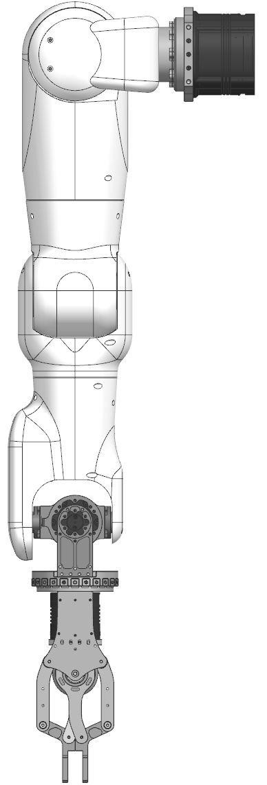
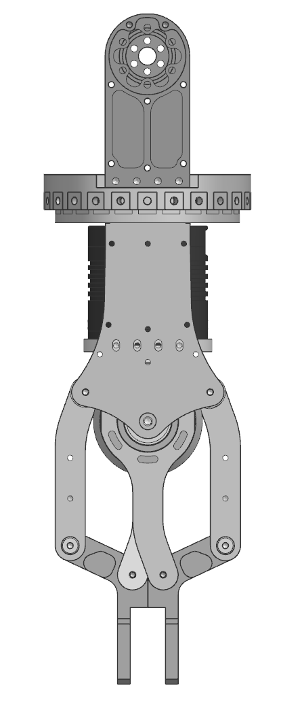
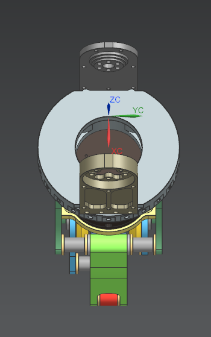

모방학습
- 전문가 시연을 그대로 모사한다.
- 양질의 시연 데이터가 많을수록 유리하다.
LECTURE 04
자연어 명령을 행동으로 변환하는 모델

QUESTION
CONCEPT
인식과 해석 결과가 행동 출력으로 이어진다.
CONCEPT
COMPARE
QUESTION
CONCEPT
하나의 에피소드에 관측과 행동이 시계열로 기록된다.
BUILD
BUILD
관절 값과 영상은 같은 시각에 맞춰야 한다.
BUILD
CONCEPT
학습 데이터는 실패 사례와 환경 다양성을 포함해야 한다.
CONCEPT
CONCEPT
모델이 출력한 관절 목표를 제어기가 구동 신호로 변환한다.
CONCEPT
LECTURE 04 · ROBOT MODEL
과제의 도면·메시·질량 정보로
가상 환경에서 움직일 로봇을 구성한다.
부품의 형상·좌표·질량을 구분한다.
링크와 관절로 로봇의 구조를 기술한다.
MuJoCo의 MJCF와 Isaac Sim의 USD를 구성한다.
ROBOT MODEL · SOURCE
연심실_과제1의 자료를 하나의 로봇 모델로 연결한다.
DD_GRP_DATA.pptx의 조립도에서 73 mm·93.5 mm 간격과 손목의 90° 회전을 읽는다.
DD_STL/의 WRIST1·WRIST2·INPUT·COUPLER·OUTPUT을 사용한다.
DD_REVISION-GRIPPER_MASS_PROPERTIES.xlsx에서 질량·질량중심·관성을 읽는다.

제공 PPTX의 원본 그림. 기존 alice_m1_urdf/alice_m1.urdf의 몸통·팔에 그리퍼 변경분을 반영한다.
도면은 연결 관계, STL은 형상, 질량표는 동역학 정보를 제공한다.
ROBOT MODEL · CONCEPT
Unified Robot Description Format · XML 문법으로 링크와 관절을 기록한다.
실제 전체 링크를 생략한 개념도다. 최상위 <robot name="alice_m1"> 안에 link와 joint를 선언한다.
몸통·팔·손가락처럼 함께 움직이는 부품 단위다.
parent와 child를 지정하고 고정·회전·직선 운동을 정한다.
각 child는 하나의 parent에 연결된다. 그리퍼의 닫힌 고리는 별도로 다룬다.
URDF는 제어 프로그램이 아니라 로봇의 구조와 물성을 담은 설명서다.
ROBOT MODEL · CONCEPT
화면에 보이는 모양과 물리 계산에 쓰는 정보는 구분한다.
| 요소 | 기록하는 내용 | M1 손목의 예 |
|---|---|---|
| visual | 화면에 렌더링할 형상과 재질 | WRIST1.stl · 흰색 재질 |
| collision | 접촉을 검사할 형상과 위치 | 메시 또는 단순화한 box·capsule |
| inertial | 질량·질량중심·관성 텐서 | WRIST1 질량 ≈ 0.1806 kg |
같은 모양으로 보여도 충돌과 관성이 다르면 움직임은 달라진다.
ROBOT MODEL · CONCEPT
origin의 위치·방향과 axis의 회전축은 서로 다른 정보다.
부모 링크 기준으로 관절 프레임을 놓는다. xyz는 m, rpy는 rad 단위다.
관절 프레임 기준의 단위 방향벡터다. 로봇 전체의 고정된 X축이라는 뜻은 아니다.
각 정보의 프레임을 링크 기준으로 배치한다. 모두 같은 위치일 필요는 없다.
축의 관계를 설명하는 개념도. 실제 배치는 다음 페이지의 수치로 정의한다.
관절축의 숫자가 같아도, 부모 링크의 방향이 달라지면 공간에서의 축은 달라진다.
URDF · BUILD 1
WRIST1 아래에 WRIST2를 붙이고, Z축으로 +90° 회전시킨다.
<joint name="l_wrist2" type="fixed">
<origin xyz="0 0 -0.073"
rpy="0 0 1.57079632679"/>
<parent link="left_arm_link_7"/>
<child link="left_wrist2_link"/>
</joint>실제 URDF의 l_wrist2 발췌. 부모·자식 링크 선언은 생략했다.
부모의 −Z 방향이므로 xyz의 z에 −0.073을 기록한다.
URDF의 rpy에는 각도를 rad로 기록한다. 이 모델은 +90°를 사용한다.
WRIST2는 손목에 고정된 부품이다. 별도의 모터가 달린 회전관절이 아니다.
조립 위치는 origin으로, 움직일 수 있는지는 joint의 type으로 구분한다.
URDF · BUILD 2
INPUT은 WRIST2 아래 93.5 mm에서 관절 프레임의 X축을 중심으로 회전한다.
lower·upper는 rad 단위다. 1.3125 rad는 약 75.2°다.
오른손 법칙으로 확인한다. 실제 +90° 손목 조립 후에는 부모 손목 기준 축도 달라진다.
회전관절에서는 N·m와 rad/s를 사용한다. 기록된 값이 장비의 안전 허용값을 보장하지는 않는다.
<joint name="l_gripper_input" type="revolute">
<origin xyz="0 0 -0.0935" rpy="0 0 0"/>
<parent link="left_wrist2_link"/>
<child link="left_gripper_input_link"/>
<axis xyz="1 0 0"/>
<limit lower="0.0" upper="1.3125"
effort="1000" velocity="3.0"/>
</joint>실제 URDF 발췌. effort=1000은 파일의 값이며 실기 구동 권장값이 아니다.
축·부호·범위는 화면에서 관절을 하나씩 움직여 확인한다.
URDF · BUILD 3
STL은 표면 형상이다. 관절축·질량·조립 관계가 자동으로 들어 있지는 않다.
<link name="left_arm_link_7">
<visual>
<geometry>
<mesh filename="meshes/gripper/WRIST1.stl"
scale="0.001 0.001 0.001"/>
</geometry>
</visual>
<collision>
<geometry>
<mesh filename="meshes/gripper/WRIST1.stl"
scale="0.001 0.001 0.001"/>
</geometry>
</collision>
<!-- inertial은 다음 페이지의 값을 넣는다. -->
</link>실제 링크의 형상·충돌 구조를 간추렸다. 두 링크 완성 URDF는 원본 URDF 옆에 놓고 meshes/를 함께 사용한다.
이 파일은 URDF 옆 meshes/를 참조한다. URDF만 복사하면 형상이 빠진다.
이 과제 메시는 mm 기준이며 scale=0.001로 m에 맞춘다. 모든 STL이 mm인 것은 아니다.
메시 원점과 링크 원점이 다르면 visual origin을 조정한다. 조립도 치수와 함께 비교한다.
단위와 원점이 맞아야 메시가 올바른 위치와 크기로 붙는다.
URDF · BUILD 4
WRIST1의 실제 질량과 질량중심·관성을 사용한다.
이 XLSX의 단위는 질량 kg, COM m, 관성 kg·m²다. 메시와 함께 0.001을 다시 곱하지 않는다.
표의 COM은 WCS로 표기돼 있다. 내보낸 부품 좌표계와 링크 좌표계가 일치하는지 먼저 대조한다.
질량만 같아도 질량의 분포가 다르면 회전 운동은 달라진다.
<inertial>
<origin xyz="-0.00032333365841
-2.136268376e-09
-0.030713841795"
rpy="0 0 0"/>
<mass value="0.18059836361"/>
<inertia ixx="0.00018559729196"
ixy="-1.3862384649e-12"
ixz="9.9501381095e-07"
iyy="0.0003965177481"
iyz="-1.5225946075e-11"
izz="0.00032950360851"/>
</inertial>실제 WRIST1 inertial 값. 공백 줄바꿈만 읽기 쉽게 바꿨다.
형상의 단위 변환과 질량표의 단위 변환은 별도로 판단한다.
ROBOT MODEL · CONCEPT
숫자 여섯 개를 복사하기 전에, 어떤 좌표계의 관성인지 확인한다.
(x, y, z) → (−x, −y, z)
이 모델의 미러 손가락은 Z축으로 180° 회전한 프레임을 사용한다.
| COM | x·y 부호 반전 |
|---|---|
| 관성 | ixz·iyz 부호 반전 |
| 유지 | ixx·iyy·izz·ixy |
URDF 관성은 질량중심 기준이다. 다른 점 기준 관성이면 평행축 정리를 적용한다.
관성 텐서와 inertial origin의 rpy가 같은 프레임을 표현해야 한다.
양의 질량, 대칭·양정치 관성, 주관성의 삼각부등식을 검사한다. 0이나 임의의 대각값으로 덮지 않는다.
부품을 회전시키면 질량은 같아도 COM 좌표와 관성 성분은 바뀔 수 있다.
ROBOT MODEL · CONCEPT
손가락 여러 부품이 움직여도 독립적으로 명령하는 관절은 더 적다.
이 모델은 l_gripper_input을 기준으로 다른 손가락 관절의 각도를 정한다.
OUTPUT은 −q, COUPLER는 +q를 따른다. 반대편 손가락도 부호를 맞춰 연동한다.
mimic은 각도 관계다. 핀 접촉과 힘 전달을 갖는 실제 폐루프를 그대로 구현한 것은 아니다.

<!-- l_gripper_output joint 내부 -->
<mimic joint="l_gripper_input"
multiplier="-1.0" offset="0.0"/>과제 PPTX 원본 형상과 실제 URDF mimic 발췌.
운동학적 연동과 물리적인 폐루프 구속은 구분해서 다룬다.
URDF · VERIFY
파일이 열리는 것과 로봇이 올바르게 구성된 것은 다른 검증 단계다.
check_urdf alice_m1_gripper_v1.urdfcheck_urdf가 설치된 환경에서 URDF가 있는 디렉터리를 기준으로 실행한다.
중복 이름, 누락된 parent·child, 메시 경로를 확인한다.
WRIST2의 −73 mm·+90° 조립과 INPUT의 −93.5 mm 배치를 대조한다.
질량 합계, COM, 관성, collision 누락을 검사한다. RViz는 동역학 시뮬레이터가 아니다.
이 URDF는 47 links·46 joints다. 링크 수와 독립 자유도 수는 같지 않다.
SIMULATION · FORMATS
XML은 문법이고, URDF·MJCF는 서로 다른 로봇 모델 형식이다.
| 형식 | 주된 역할 | 환경 구성에서 추가할 것 |
|---|---|---|
| URDF.urdf · XML | 링크·관절·형상·물성 | 시뮬레이터별 구동·접촉 설정 |
| MJCF.xml · MuJoCo | 물리 모델·구동·센서·제약 | 바닥·물체·빛·카메라를 담은 씬 |
| USD.usd / .usda / .usdc | 장면과 에셋의 계층·합성 | 물리 스키마·드라이브·PhysicsScene |
URDF에서 각 시뮬레이터로 분기한다. MJCF를 거쳐야 USD가 되는 것은 아니다.
MUJOCO · BUILD 1
URDF의 link·joint 정보를 MJCF의 body·joint·geom으로 대응시킨다.
worldbody 아래에 부모·자식 body를 중첩한다. joint가 없는 자식 body는 고정된다.
mesh asset을 참조한다. 시각용 geom과 접촉용 geom을 나눌 수 있다.
이 MJCF는 angle="degree"다. URDF의 1.5708 rad가 euler="0 0 90"에 대응한다.
<compiler angle="degree" meshdir="meshes"/>
<body name="left_wrist2"
pos="0 0 -0.073" euler="0 0 90">
<!-- inertial · visual geom · child body -->
</body>실제 MJCF의 속성을 간추린 발췌. inertial과 그리퍼 자식 body는 생략했다.
이 사례의 MJCF는 시뮬레이션 설정을 별도 작성한 모델이다. 자동 변환 결과라고 가정하지 않는다.
비슷한 태그를 복사하는 것이 아니라, 같은 좌표·형상·물성을 다시 표현한다.
MUJOCO · BUILD 2
관절이 있다는 것만으로 목표 각도를 따라 움직이지는 않는다.
<equality>
<joint joint1="l_gripper_output"
joint2="l_gripper_input"
polycoef="0 -1 0 0 0"/>
</equality>
<actuator>
<motor name="l_gripper_input"
joint="l_gripper_input"
ctrllimited="false"/>
</actuator>실제 MJCF의 equality·actuator 일부. 다른 관절과 제약은 생략했다.
OUTPUT = −INPUT을 joint equality로 구속한다. 수치 솔버의 제약 오차도 확인한다.
이 모델은 motor를 사용한다. 위치 목표 추종은 별도의 제어기가 필요하다.
이 파일은 joint equality 12개를 쓰며 connect 폐루프 제약은 없다. ctrl 제한도 자동으로 생기지 않는다.
mimic 관계를 옮겨도 구동 방식·제약 오차·출력 제한을 따로 검증해야 한다.
ROBOT MODEL · CONCEPT
복잡한 메시를 단순한 형상으로 바꾸면 빨라지지만 접촉 결과도 달라진다.
손목과 손가락의 STL을 렌더링에 사용한다.
이 MJCF는 손가락에 capsule 등을 사용한다. 비볼록 메시 하나로 구멍·오목한 형상이 그대로 충돌한다고 가정하지 않는다.
관통 문제를 숨기기 위해 모든 자기충돌을 끄지 않는다. 외부 물체와의 접촉도 확인한다.

현재 MJCF의 WRIST2에는 전용 충돌 geom이 없다. 리비전 외형 전체의 충돌 정확도는 보장되지 않는다.
형상이 보이는지와 그 위치에서 물체가 부딪히는지는 따로 검사한다.
MUJOCO · SCENE
새 scene_gripper_lab.xml을 로봇 MJCF 옆에 저장한다.
<mujoco model="m1 gripper lab">
<include file="alice_m1_gripper_v1.xml"/>
<option timestep="0.002" gravity="0 0 -9.81"/>
<worldbody>
<light pos="0 0 3" dir="0 0 -1"/>
<camera name="overview" pos="3 -3 2"
xyaxes="0.707 0.707 0 -0.302 0.302 0.905"/>
<geom name="floor" type="plane" size="3 3 0.1"
rgba="0.85 0.87 0.92 1"/>
<body name="cube" pos="0.8 0 0.5">
<freejoint/>
<geom type="box" size="0.04 0.04 0.04"
mass="0.1" rgba="0.8 0.2 0.2 1"/>
</body>
</worldbody>
</mujoco>기존 로봇 XML과 meshes/를 유지하고 씬 파일에서 로봇을 불러온다.
freejoint를 가진 큐브는 중력에 따라 움직인다. box size는 반길이이므로 한 변은 8 cm다.
현재 scene_alice_m1.xml은 rohand 모델을 참조한다. 그리퍼 실습에는 위의 새 씬을 사용한다.
로봇 파일은 에셋이고, 씬은 로봇과 실험 환경을 조합한 실행 단위다.
MUJOCO · VERIFY
MuJoCo Python 환경에서 새 씬이 있는 디렉터리를 기준으로 실행한다.
누락 메시, 중복 이름, 잘못된 관성·관절 참조 오류를 먼저 해결한다.
100 step 뒤 유한한 상태인지 검사한다. 이것만으로 안정성이나 파지 성능이 증명되지는 않는다.
바닥 위 물체와 관절 운동을 관찰한다. 중력 보상·위치 제어 없이 로봇이 자세를 유지한다고 기대하지 않는다.
import mujoco
import numpy as np
model = mujoco.MjModel.from_xml_path(
"scene_gripper_lab.xml")
data = mujoco.MjData(model)
for _ in range(100):
mujoco.mj_step(model, data)
assert np.isfinite(data.qpos).all()
print(model.nq, model.nv, model.nu)교육용 최소 스모크 테스트. MuJoCo의 모델·데이터 상태만 다루며 실기 명령은 보내지 않는다.
열림 → 유한한 상태 → 올바른 접촉 → 의도한 운동의 순서로 검증한다.
ISAAC SIM · IMPORT
URDF Importer로 읽고, 시뮬레이터가 사용할 물리 설정을 확인한다.
URDF와 참조 meshes/를 함께 준비한다. 입력 모델의 리비전도 기록한다.
base 고정 여부, fixed joint 병합, collision 생성 방식, mimic 처리와 drive 설정을 확인한다.
별도의 출력 폴더에 USD를 저장하고 import 로그에서 누락·경고를 확인한다.
URDF Importer의 화면과 기본값은 Isaac Sim 버전에 따라 다르다. 현재 파일의 생성 옵션 전체가 남아 있다고 가정하지 않는다.
변환 성공 메시지는 시작점이다. 결과의 물리 설정까지 확인해야 한다.
USD · COMPOSITION
지정된 USDA는 형상·물리·센서·로봇 설정 레이어를 참조하는 진입 파일이다.
defaultPrim은 alice_m1이다. 다른 씬에서 로봇 에셋을 참조할 때의 기본 프림이다.
base·physics·sensor·robot USD를 references와 payload로 조합한다. 실제 로딩은 variant 선택에도 달려 있다.
이 파일은 1 unit = 1 m, 위쪽 = Z다. 확장자만 바꿔 URDF나 MJCF를 USD로 만들 수는 없다.
#usda 1.0
(
defaultPrim = "alice_m1"
metersPerUnit = 1
upAxis = "Z"
)configuration/의 역할별 레이어를 references·payload로 조합한다.
실제 USDA 메타데이터 발췌. .usda는 텍스트, .usdc는 바이너리이며 .usd는 둘 중 하나일 수 있다.
진입 USDA만 복사하지 않는다. configuration/와 참조 자산도 함께 유지한다.
ISAAC SIM · SCENE
로봇 에셋과 실험용 환경을 분리하면 같은 로봇을 다른 장면에서 재사용할 수 있다.
씬 USDA 예제를 로봇 폴더 alice_m1_gripper_v1/ 옆에 저장하고 연다. 단위·중력·바닥·큐브·빛·카메라가 들어 있다.
예제의 /World/Robot은 상대 경로로 로봇을 참조한다. 리비전을 맞춘 USD 폴더와 configuration/를 함께 둔다.
예제에서 바닥은 정적 collider, 큐브는 0.1 kg의 rigid body·collider다. /World/Overview 카메라에서 배치를 확인한다.
카메라에 잘 보이는 것과 물리적으로 올바르게 움직이는 것은 다르다.
씬의 역할은 로봇을 배치하고, 상호작용할 환경과 관측 조건을 정하는 것이다.
MODEL REVISION · VERIFY
현재 제공 파일을 대조하면 손목 리비전의 반영 상태가 다르다.
| 확인 항목 | URDF · MJCF | 현재 USD |
|---|---|---|
| 손목 구성 | WRIST1 + WRIST2−73 mm 이동 · +90° 조립 | 이전 손목 구성WRIST2 프림 없음 |
| 질량 합계 | 약 117.4993 kg | 약 116.6007 kg |
| 입력 관절 위치 | WRIST2 기준 −93.5 mmWRIST1부터 합계 −166.5 mm | 기존 손목 기준 −150.5 mm |
| 판단 | 리비전 모델의 비교 기준 | 갱신·재검증 전에는 동등 모델로 사용하지 않는다 |
fixed joint 병합으로 이름이 사라질 수 있다. 질량·상대 위치·형상까지 함께 비교한다.
PRACTICE
AI 에이전트가 구현하고, 학생은 입력 자료와 결과 화면을 대조한다.
기존 M1에 리비전 손목·그리퍼를 붙인다. 링크 트리·단위·관절축·질량을 확인한다.
로봇·바닥·큐브를 불러오고 충돌 형상과 손가락 연동을 확인한다.
같은 리비전을 가져온 뒤 새 Stage에서 관절·drive·접촉을 확인한다.
파일 이름만 비교하지 않는다. 입력 자료의 리비전, 변환 옵션, 수정한 물리 설정과 남은 차이를 함께 기록한다.
열리는 파일이 아니라, 근거를 설명하고 결과를 재현할 수 있는 모델을 제출한다.
RECAP
URDF·MJCF·USD는 같은 로봇을 서로 다른 목적과 규칙으로 표현한다.
형상·좌표·물성의 출처와 단위를 기록한다.
충돌·제약·구동 설정을 목적에 맞게 구성한다.
치수·질량·관절·접촉을 대조한 뒤 제어와 학습으로 연결한다.
로컬 모델은 제공된 gripper_v1 파일 기준이다. 공식 문서의 버전과 설치 버전 차이는 별도로 확인한다.
시뮬레이터 사이의 일치는 가정이 아니라 검증 결과여야 한다.